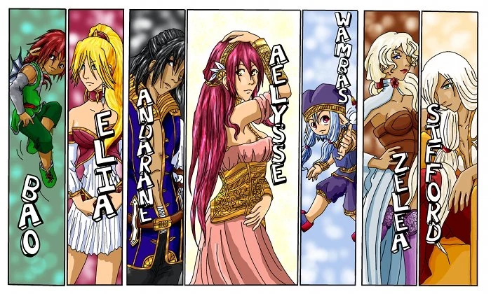
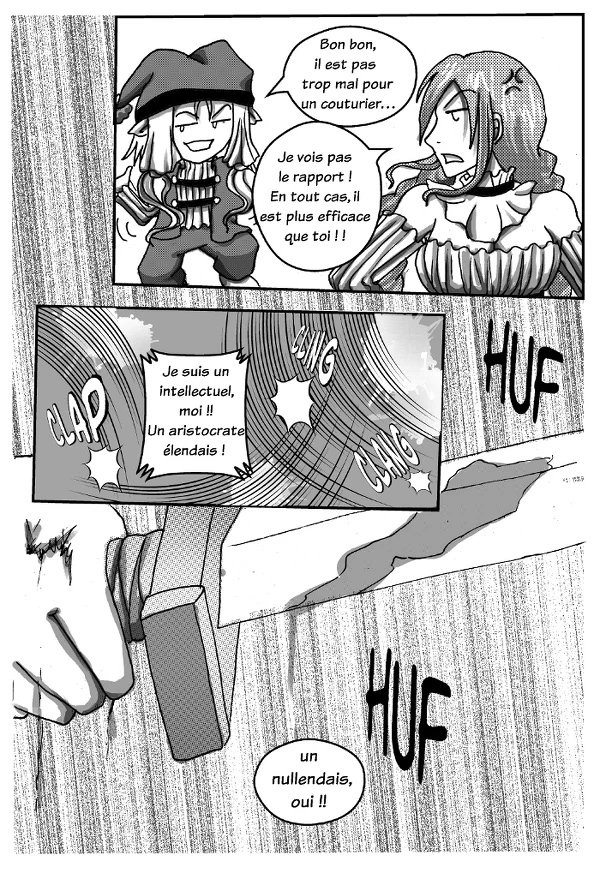
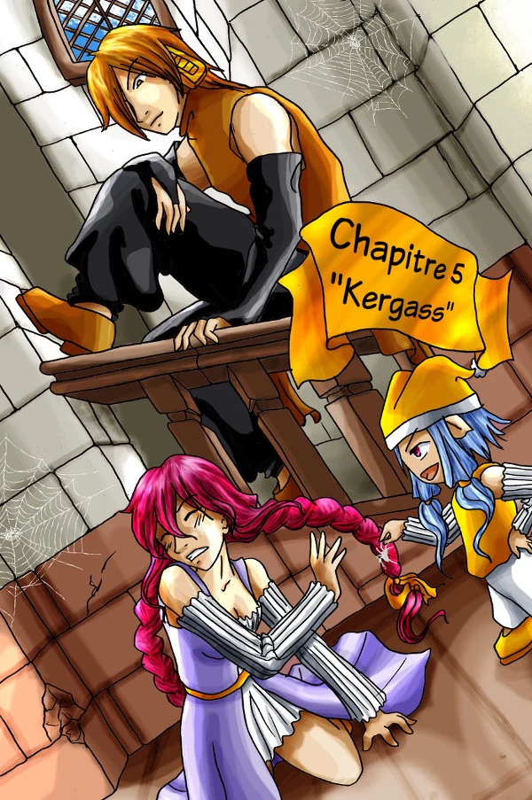
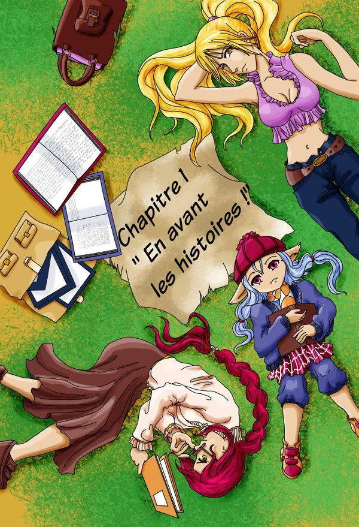
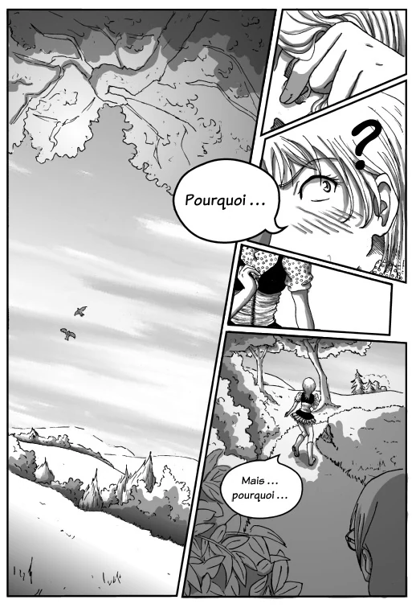
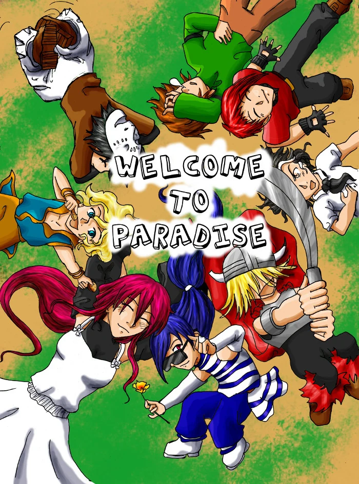
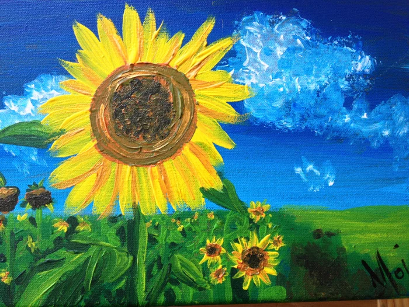
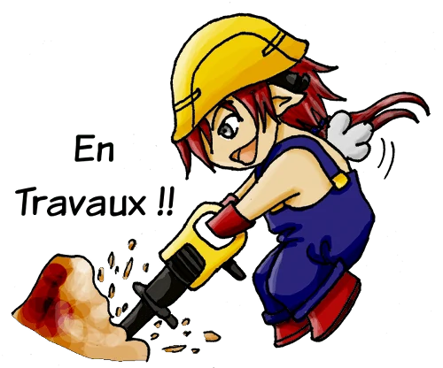
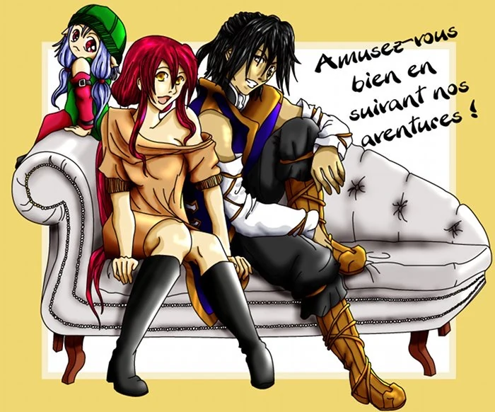

Les nouvelles ci-dessous sont conservées comme archives. Elles ont été publiées de 2012 à 2015.
Découvrez ma bande dessinée les Contes d'Aelysse, son hors-série - un chapitre à part qui explique les grandes lignes de ma bd - ainsi que les "Histoires d'en rire", de petits clins d’œil comiques à mes personnages.
Vous avez également la possibilité de parcourir le monde que j'ai crée avec ses différentes dimension et ses races.
Je me suis essayée à la coloration, dessins que vous pouvez retrouver dans la galerie ainsi que d'autres créations plus anciennes.
Je vous souhaite un agréable voyage !

06.05.15
Ma foi, il était temps de faire quelques mises à jour ! Comme le temps passe vite, deux ans ont déjà passé !!!!!! Mais bon, j'ai continué mon travail et c'est avec un grand plaisir que je peux annoncer la fin du tome 1 !!
Et je n'ai pas chômé puisque je vous rajoute en même temps les 15 premières pages du tome 2 !!
Cela faisait déjà un moment que je n'avais pas fait de mise à jour et pourtant j'ai bossé ! J'ai rajouté quelques petites choses par-ci par-là mais sans le préciser dans les news mais à quoi cela sert-il de faire des mises à jour si c'est pour avertir personne ! Au menu, j'ai rajouté trois pages aux Contes d'Aelysse.
page 154

J'ai remarqué que j'avais loupé une page de titre, celle du chapitre 4. Mais j'ai corrigé ce problème et voici une page de titre toute nouvelle, toute belle
page 109

J'ai également recoloré la page de titre du chapitre 1 car je la trouvais trop moche, surtout qu'il s'agit de la première image de ma bande dessinée alors c'était intolérable

Et voilà quelques nouvelles mises à jour : L'image de la Via Esperita

ainsi que une nouvelle version du Hors série remasterisé.

De plus, voici une nouvelle coloration pour le Hors série


Mise à jour des pages de la bd. On passe direct de la page 113 jusqu'à la page 151. ça fait un gros bloque mais au moins, l'histoire progresse bien. Bonne lecture !

page 113

06.07.2012

Création de la section Galerie ! Ainsi que la coloration d'un Minies Bao pour les sections encore en Travaux ! Je bosse encore sur la partie critique, j'espère pouvoir bientôt pouvoir y mettre quelque chose !04.07.2012 - Nouvelle version
